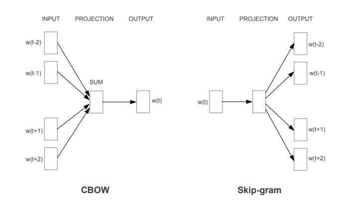

词向量系列（3）：深入Word2Vec及其实现
更新了Word2Vec的实现，包括若干技巧。
word2vec 基于局部上下文窗口的方法。
NNLM
可以说，A Neural Probabilistic Language Model 这篇 paper 是词的分布式表示的开篇鼻祖，不过当时，NNLM 模型关注的是语言模型，具体是一个n-grams的语言模型，
模型训练好后，有一个副产品即词向量，也就是Embedding层（第一层参数）。Embedding层输出后的词向量序列直接拼接起来组成一个更大的向量。接在做更多的处理后送入softmax预测目标词。
NNLM本质是一个语言模型，但训练好后有一个副产品就是词向量，也就是第一层参数，用现在的深度学习框架来说就是Embedding。
NNLM的做法直接启发了词的向量表示，接下来简单说说Embedding是什么。
简单说说Embedding
Embedding是一个没有激活函数和偏置项的Dense网络，也就是一个矩阵$\boldsymbol{W} \in \mathbb{R}^{|V| \times m}$，对于词$w_i$表示词表中的第$i$个词，用one-hot表示有，
位置$i$为1，其他为$0$。Embedding要做的事情就是把词$w_i$的onehot离散表示转变为稠密的向量，
也就相当于取矩阵$\boldsymbol{W}$的第$i$行作为词$w_i$的稠密表示。这意味着，$\operatorname{one-hot}(w_i)$与矩阵$\boldsymbol{W}$相乘直接改矩阵的第$i$行即可，不需要繁复的矩阵乘积。
这就是Embedding的原理和作用，可以简单表示为，
词$w_i$在字表V中对应编码$i$输入Embedding，获得该词的稠密表示。在实践中，对于OOV的词，可以使用一个固定的编码表示，如<UNK>=1。于是，对于句子（词ID序列）$i,j,k,\dots$，有
有了这种简单的表示工具后，CBOW模型就很容易表达了。
word2vec
CBOW 和 skip-gram 都是 word2vec 的实现方法，两者的网络架构分别如下，

学习词向量的无监督方法大致可以分为两类：
- 基于全局共现矩阵及其分解技巧，如上一篇中的LSA以及其基于SVD
基于滑动的上下文窗口
CBOW 和 skip-gram 都是基于滑动的上下文窗口的模型。下面我们分别来介绍这两个模型。
CBOW 模型
CBOW 根据上下文来预测当前单词，就像时间序列预测中，根据历史序列预测下一个时间步的取值。具体是这样的，假设窗口大小为$C=n$的滑动窗口下有词序列$[w_1, w_2, \dots, w_{m-1}, w_m, w_{m+1}, \dots, w_n]$，CBOW要做的事情是使用$[w_1, w_2, \dots, w_{m-1}, w_{m+1}, \dots, w_n]$作为上下文去预测词$w_m$，即
例如两个词窗口大小$C=2$的特例，
对于一个词的上下文，窗口大小为$C=1$，有特例
即用当前词预测下一个词。
CBOW模型是一个带单隐层的前馈神经网络，也就是Embedding层，其上下文向量是窗口内词的Embedding输出的均值。这里依旧假设窗口大小为$C=n$，那么CBOW的上下文向量为，
对于特例$C=1$，就是使用当前单词预测下一个单词，于是$\boldsymbol{h} = \boldsymbol{x}_{n-1}$。
CBOW模型模型的输出是对，
建模，即用上下文向量预测当前词。具体是，
为词表V的概率分布，其中$\boldsymbol{W}’ \in \mathbb{R}^{m \times |V|}$。根据交叉式损失函数，
$\boldsymbol{w}’_i$为矩阵$\boldsymbol{W}’ \in \mathbb{R}^{m \times |V|}$的第$i$列。于是有总体目标，
skip-gram
skip-gram 和 CBOW相反，根据给定单词预测其上下文，即
同样，每个词通过Embedding后获得向量化表示，
skip-gram的目标函数是最大化多个输出的联合概率分布，因此
相比与CBOW采用上下文来预测当前词，skip-gram则是采用当前词来预测上下文，两种的网络结构都相似，理论上单独训练获得的词向量效果相似。不过在大型语料下，建议采用skip-gram，因为其表现往往更优。
训练与优化
word2vec直接训练的难度很大，为此提出两种优化策略：
- 分层 softmax
- 负采样
负采样
CBOW要根据上下文预测输出的词，输出可以看做是分类过程，只不过分类类比为词汇表中的所有词汇，因此在计算softmax时涉及到的计算，
主要的计算量集中在分母的归一化上。与之对应的是优化中计算，
计算量非常大。注意到这里的类别涉及两类，要预测的词，称为正类，其他词，称为负类。因此对于softmax输出的类别分布向量中，只有一个位置是表示正类的概率，剩下的$|V|-1$个位置都是负类的概率。为了缩减计算量，再保留正类的情况下，随机采样一批负类来替代整个词汇表的计算是不错的优化方案。于是，从词汇表$V$中采样一个子集$R = {w^+, w_1^-, \dots, w_{n-1}^- } \sub V $，有
那么如何解决负类如何采样问题？负类样本采样多少个？
负类样本的采样应该根据如下概率分布采样，
该分布也称为噪声分布。其中$f(w)$表示词$w$在语料库中的概率。一般建议5~10个负样本即可，这是数量级上减少计算量。
为什么能行？这会不会导致模型偏离原来的学习目标？其实以上思路就是噪音对比估计（NCE，Noise Contrastive Estimation）思想。其基本思想是通过一定的技巧去估计概率分布的参数进而避免复杂的归一化计算。可以参考论文：
- word2vec Explained: Deriving Mikolov et al.’s Negative-Sampling Word-Embedding Method
- Noise-contrastive estimation: A new estimation principle for unnormalized statistical models
分层 softmax
分层softmax本质是对softmax的近似，对于softmax难计算场景，都可以使用分层softmax来近似，它把原来的计算分为$\log(N)$层的二分类，这个现在使用较少，不展开。
降采样
对于一些常见的词，如停用词，我们应该在语料库中随机删除它，因为对于CBOW来说：
- 停用词出现在上下文时，这类词并只能为目标词提供极少语义上的信息
- 当这类词作为目标词时，该词没有提供多少语义信息，没有必要频繁学习
类似第，skip-gram也适用以上分析。
于是这里提出降采样思路。降采样中，词$w$被采样的概率，
其中$r = 0.001$为降采样率，等号右侧是推荐的默认值。$z(w)$是$w$在语料库中出现的概率。该采样思路整体意义上是要求，单词在语料库中出现的词频越大，保留该单词的概率越小。
降采样方法是配合窗口窗口生成训练样本使用，其具体实现可参看源码。
实现与应用（补充）
先前都是使用gensim来使用word2vec，这里补充一下基于 tensorflow2.x 实现的 word2vec：https://github.com/allenwind/word2vec-in-tensorflow2.0，包括两个模型（CBOW和SkipGram）和两种优化方案（Hierarchical softmax和负采样），这里开源负采样、CBOW和SkipGram的实现。
以CBOW为例，模型训练（需要训练语料，可自行调整）：
1 | $ python model_cbow.py |
模型训练好后简单的相似计算：
1 | $ python tools.py |
简单的交互测试：
1 | >>> from tools import topk_similar |
以上的训练直接使用THUCNews语料。
源码地址：https://github.com/allenwind/word2vec-in-tensorflow2.0
总结
word2vec 转为词向量涉及，里面有大量的技巧提高训练效率，而不同于语言模型，后者词向量是副产品。因此，word2vec获得的词向量更具通用性。
word2vec中CBOW对比skip-gram：
- CBOW用周围词预测中心词；skip-gram用中心词预测周围词
- skip-gram用中心词预测周围词，做的预测比CBOW多，训练时间更长
- CBOW训练效率更高，skip-gram训练效率慢一点，但是通过预测周围词来训练中心词的向量表示，表示能力往往更好
- 因此，CBOW与skip-gram有效率与性能上的取舍。
word2vec优缺点：
- 优点：在单词类比任务中表现较好，即king - man = queen - woman这类例子。这说明模型具有词汇理解能力，想象一下我们做的类比推理。
- 缺点：因为word2vec在独立的局部上下文窗口上训练，因此难以利用单词的全局统计信息。
- 缺点：对词是确定性的，即在不同语境中同一词的向量是一样的，这意味着 word2vec 不能解决多义词问题。
word2vec一再被人证明是一个全局PPMI（共现）矩阵的分解，参考论文：
- Neural word embedding as implicit matrix factorization
- Word embedding revisited: A new representation learning and explicit matrix factorization perspective
word2vec和LSA的对比：
两者的预料都不带标注。
LSA 通过 VSM 获得矩阵并分解得到词向量与主题向量，本质上是无监督过程。
word2vec 是有监督，更准确地说是自监督
LSA 中的 SVD 分解是无监督，而 word2vec 是有监督的。
参考文献
[1] Efficient Estimation of Word Representations in Vector Space
[2] word2vec Explained: Deriving Mikolov et al.’s Negative-Sampling Word-Embedding Method
[3] Distributed Representations of Words and Phrases and their Compositionality
[4] https://code.google.com/archive/p/word2vec/
转载请包括本文地址：https://allenwind.github.io/blog/9163
更多文章请参考：https://allenwind.github.io/blog/archives/